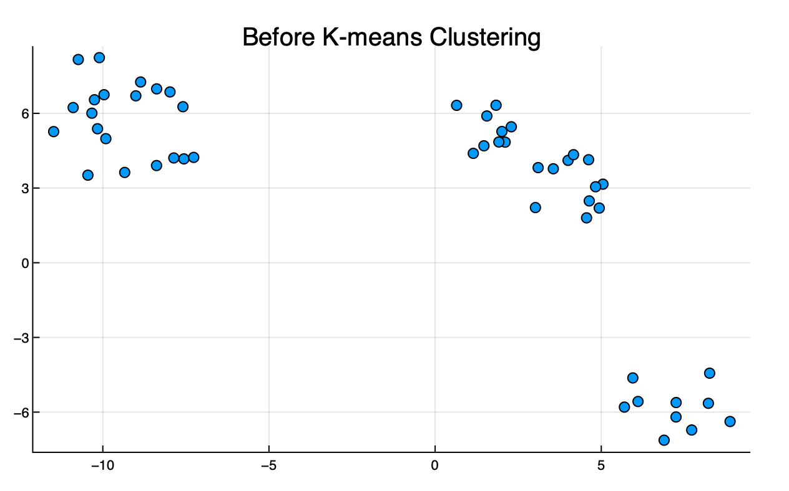

Tutorial 3: K-Means and Time Domain Reduction
Interactive Notebook of the tutorial
A good tool to reduce computation time of GenX is to use Time-domain reduction. Time-domain Reduction is a method that selects a smaller set of time steps from the data in a way that reduces computation time while still capturing the main information of the model. In this tutorial, we go over how TDR works in GenX and how it uses K-means clustering to choose the optimal time steps. For more information on TDR in capacity expansion models, see Mallapragada et al.
Table of Contents
- Time Domain Reduction
- K-Means Clustering
- Results of Time Domain Reduction
- Reconstruction
- Extreme Periods
- Objective Values and Representative Periods
Time Domain Reduction
To see how Time Domain Reduction works, let's look at the Demand_data in example_systems/1_three_zones:
# First, load all packages needed
using DataFrames
using CSV
using VegaLite
using YAML
using PlotlyJS
using Plots
using Clustering
using ScikitLearn
@sk_import datasets: (make_blobs)case = joinpath("example_systems/1_three_zones");loads = CSV.read(joinpath(case,"system/Demand_data.csv"),DataFrame,missingstring="NA")| Row | Voll | Demand_Segment | Cost_of_Demand_Curtailment_per_MW | Max_Demand_Curtailment | $/MWh | Rep_Periods | Timesteps_per_Rep_Period | Sub_Weights | Time_Index | Demand_MW_z1 | Demand_MW_z2 | Demand_MW_z3 |
|---|---|---|---|---|---|---|---|---|---|---|---|---|
| String7 | String3 | String7 | String7 | String7 | String3 | String7 | String7 | Int64 | Int64 | Int64 | Int64 | |
| 1 | 50000 | 1 | 1 | 1 | 2000 | 1 | 8760 | 8760 | 1 | 7850 | 2242 | 1070 |
| 2 | 2 | 0.9 | 0.04 | 1800 | 2 | 7424 | 2120 | 1012 | ||||
| 3 | 3 | 0.55 | 0.024 | 1100 | 3 | 7107 | 2029 | 969 | ||||
| 4 | 4 | 0.2 | 0.003 | 400 | 4 | 6947 | 1984 | 947 | ||||
| 5 | 5 | 6922 | 1977 | 944 | ||||||||
| 6 | 6 | 7045 | 2012 | 960 | ||||||||
| 7 | 7 | 7307 | 2087 | 996 | ||||||||
| 8 | 8 | 7544 | 2154 | 1029 | ||||||||
| 9 | 9 | 7946 | 2269 | 1083 | ||||||||
| 10 | 10 | 8340 | 2382 | 1137 | ||||||||
| 11 | 11 | 8578 | 2449 | 1169 | ||||||||
| 12 | 12 | 8666 | 2474 | 1181 | ||||||||
| 13 | 13 | 8707 | 2487 | 1187 | ||||||||
| ⋮ | ⋮ | ⋮ | ⋮ | ⋮ | ⋮ | ⋮ | ⋮ | ⋮ | ⋮ | ⋮ | ⋮ | ⋮ |
| 8749 | 8749 | 10730 | 3064 | 1463 | ||||||||
| 8750 | 8750 | 10550 | 3013 | 1439 | ||||||||
| 8751 | 8751 | 10438 | 2981 | 1423 | ||||||||
| 8752 | 8752 | 10469 | 2990 | 1427 | ||||||||
| 8753 | 8753 | 11228 | 3206 | 1531 | ||||||||
| 8754 | 8754 | 11908 | 3401 | 1624 | ||||||||
| 8755 | 8755 | 11562 | 3302 | 1576 | ||||||||
| 8756 | 8756 | 9923 | 3797 | 1339 | ||||||||
| 8757 | 8757 | 9461 | 3621 | 1277 | ||||||||
| 8758 | 8758 | 9018 | 3452 | 1217 | ||||||||
| 8759 | 8759 | 8551 | 3281 | 1154 | ||||||||
| 8760 | 8760 | 8089 | 3106 | 1092 |
The columns to note in this file are Rep_Periods, TimeSteps_Per_Rep_Period, Time_Index, and Demand_MW_. This file shows the number of time steps used in GenX before applying TDR, i.e. every hour in a year, totaling 8,760 hours. This means that there is only one representative period, as seen in Rep_Periods.
TDR performs a "reduction" into a specified number of "representative periods", paring down the input data into a smaller set. The representative periods are then used in the GenX algorithm in place of the entire input data to reduce computation time. The TDR algorithm selects the representative periods to be the set of data whose results in GenX best match the results of the entire input data. To do this, TDR using k-means clustering, described in the next section.
When TDR is used, the file time_domain_reduction_settings.yml is called with a variety of specified settings, shown below:
time_domain_reduction_settings = YAML.load(open(joinpath(case,"settings/time_domain_reduction_settings.yml"))) Dict{Any, Any} with 15 entries:
"IterativelyAddPeriods" => 1
"ExtremePeriods" => Dict{Any, Any}("Wind"=>Dict{Any, Any}("System"=>Di…
"UseExtremePeriods" => 1
"MinPeriods" => 8
"MaxPeriods" => 11
"DemandWeight" => 1
"ClusterFuelPrices" => 1
"nReps" => 100
"MultiStageConcatenate" => 0
"Threshold" => 0.05
"TimestepsPerRepPeriod" => 168
"IterateMethod" => "cluster"
"ScalingMethod" => "S"
"ClusterMethod" => "kmeans"
"WeightTotal" => 8760Important here to note are MinPeriods and MaxPeriods. As TDR is performed, it is required to keep the number of representative periods to be between the min and max specified in the settings. This is to ensure that computation time is actually decreased and that the k-means algorithm doesn't just form one large cluster of all points. Additionally, TimestepsPerRepPeriod is set to 168, the number of hours in a week (WeightTotal includes all 8,760 timesteps, the number of hours in a year.) By specifying the number of timesteps in each representative period to be a week, we form 52 clusters from which the algorithm will choose 8-11.
For descriptions of all settings, see cluster_inputs in the documentation.
Now back to pre-TDR. Below shows the load per timestep in megawatts for the entire dataset, i.e. with only one representative period of 8760 hours. This is done for Zone 1:
loads |>
@vlplot(:line,
x=:Time_Index, y=:Demand_MW_z1, title="MW Load per hour, No TDR",
width=600,height=400,linewidth=.01)
As in Tutorial 1: Configuring Settings, we can open the genx_settings.yml file for 1_three_zones to see how TimeDomainReduction is set. If it's set to 1, this means TDR is being used.
genx_settings_TZ = YAML.load(open((joinpath(case,"settings/genx_settings.yml")))) Dict{Any, Any} with 19 entries:
"NetworkExpansion" => 1
"ModelingToGenerateAlternativeIterations" => 3
"ParameterScale" => 1
"EnergyShareRequirement" => 0
"PrintModel" => 0
"TimeDomainReduction" => 1
"Trans_Loss_Segments" => 1
"CapacityReserveMargin" => 0
"ModelingtoGenerateAlternativeSlack" => 0.1
"MethodofMorris" => 0
"StorageLosses" => 1
"MultiStage" => 0
"OverwriteResults" => 0
"UCommit" => 2
"ModelingToGenerateAlternatives" => 0
"MaxCapReq" => 0
"MinCapReq" => 1
"CO2Cap" => 2
"WriteShadowPrices" => 1To visualize how TDR decreases computation time, let's start by running example_systems/1_three_zones without TDR. In the third section of this tutorial, we'll run the example again using TDR.
To run GenX without TDR, we start by editing the settings to set TimeDomainReduction to 0:
genx_settings_TZ["TimeDomainReduction"] = 0
genx_settings_TZ ## Output settings Dict{Any, Any} with 13 entries:
"NetworkExpansion" => 1
"ParameterScale" => 1
"EnergyShareRequirement" => 0
"TimeDomainReduction" => 0
"Trans_Loss_Segments" => 1
"CapacityReserveMargin" => 0
"StorageLosses" => 1
"ComputeConflicts" => 1
"UCommit" => 2
"MaxCapReq" => 0
"MinCapReq" => 1
"CO2Cap" => 2
"WriteShadowPrices" => 1Then we write the edited settings to the file path:
YAML.write_file((joinpath(case,"settings/genx_settings.yml")), genx_settings_TZ)And run it using include. (Note: this process will take a few minutes):
@time include("example_systems/1_three_zones/Run.jl")Time elapsed for writing is 142.404724 seconds
This took a little while to run, and would take even longer for larger systems. Let's see how we can get the run time down using Time Domain Reduction. The next sections go over how K-means clustering is used to perform TDR, and how to interpret the resulting files in GenX.
K-means clustering
Let's go over how TDR works. To perform TDR, GenX uses K-means clustering. K-means is an optimization method that clusters data into several groups based on their proximity to "centers" determined by the algorithm.
K-means finds a set number of groups such that the variance between the distance of each point in the group to the mean of the group is minimized.
\[\begin{align*} \mathop{\arg \min}\limits_{\mathbf{S}} & \sum_{i = 1}^k \sum_{x \in S_i} ||x - \mu_i||^2 \\ \end{align*}\]
Where $\mathbf{S} = \{S_1, ... , S_k\}$ are the clusters, with $x$ denoting the elements of the clusters, and $\mu_i$ the mean of each cluster, i.e. the mean of the distances from each point to the center of the cluster. By taking the argmin over $\mathbf{S}$, the points $x$ are clustered into groups where their distance to the center is the smallest. For more information on how k-means works, see the Wikipedia.
GenX uses the package Clustering.jl, with documentation here. As an example, using the package ScikitLearn.jl, let's generate data that can cluster easily.
centers = 5
X, y = make_blobs(n_samples=50,centers=centers); # From scikit-learn
b = DataFrame(X,:auto)Note that clustering works for data without obvious groupings, but using blobs as an example makes k-means easier to visualize.
plotly()
Plots.scatter(b[!,"x1"],b[!,"x2"],legend=false,title="Before K-means Clustering")
Now we use the function kmeans, which is also used in src/time_domain_reduction in GenX.
R = kmeans(transpose(Matrix(b)),centers)kmeans returns three outputs: assignments, centers, and counts. Assignments shows to which cluster each points belongs, centers shows where the center coordinates of each cluster are, and counts shows how many points belong to each cluster.
println("Assignments = ",R.assignments)
println("")
println("Counts = ",R.counts)
println("")
println("Centers:")
R.centersplotly()
Plots.scatter(b[!,"x1"],b[!,"x2"],legend=false,marker_z=R.assignments,c=:lightrainbow,title="After K-means Clustering")
In GenX, the representative periods are the centers of the clusters, each representing one week of the year. In the above example that would mean there are 52 data points gathered into 11 clusters (to see this for yourself, change make_blobs to have 52 data points and 11 clusters.)
Results of Time Domain Reduction
To visualize the results of TDR, we'll set TDR = 1 back in the genx_settings.yml file in example_systems/1_three_zones:
genx_settings_TZ["TimeDomainReduction"] = 1;genx_settings_TZYAML.write_file((joinpath(case,"settings/genx_settings.yml")), genx_settings_TZ)And run GenX again with TDR:
@time include("example_systems/1_three_zones/Run.jl")Csv files with the results of TDR are generated automatically in a folder called TDR_results found within the same folder containing the input csv files, in this case example_systems/1_three_zones. The csv files in this folder show the files used in Run.jl that have been pared down from the initial input files.
As an example, consider the input file Fuels_data.csv:
Fuels_original = CSV.read(joinpath(case,"system/Fuels_data.csv"),DataFrame,missingstring="NA")Compared to TDR_Results/Fuels_data.csv:
Fuels_TDR = CSV.read(joinpath(case,"TDR_Results/Fuels_data.csv"),DataFrame,missingstring="NA")As you can see, the original has all 8,760 hours, while the TDR version only has 1,848 hours.
loads_TDR = CSV.read(joinpath(case,"TDR_Results/Demand_data.csv"),DataFrame,missingstring="NA")The 1,848 hours are divided into 11 sections of 168 hours, with each section representing one week of the original data. The number of hours per representative period is set in time_domain_reduction_settings.yml. Also specified in the file are the minimum and maximum number of clusters we would like to have (in this case 8 and 11). The k-means algorithm will then select the number of clusters that should be sufficient to capture the GenX model in fewer time steps (in this case 11).
Gen_TDR = CSV.read(joinpath(case,"TDR_Results/Generators_variability.csv"),DataFrame,missingstring="NA")generators = CSV.read(joinpath(case,"system/Generators_variability.csv"),DataFrame,missingstring="NA")Below, we create arrays out of the representative weeks and plot them on the same plot used in the beginning of this tutorial. The file Period_map shows which periods (weeks) are used in TDR and which time step corresponds to each period:
Period_map = CSV.read(joinpath(case,"TDR_Results/Period_map.csv"),DataFrame,missingstring="NA")| Row | Period_Index | Rep_Period | Rep_Period_Index |
|---|---|---|---|
| Int64 | Int64 | Int64 | |
| 1 | 1 | 4 | 1 |
| 2 | 2 | 4 | 1 |
| 3 | 3 | 4 | 1 |
| 4 | 4 | 4 | 1 |
| 5 | 5 | 8 | 2 |
| 6 | 6 | 8 | 2 |
| 7 | 7 | 8 | 2 |
| 8 | 8 | 8 | 2 |
| 9 | 9 | 8 | 2 |
| 10 | 10 | 12 | 3 |
| 11 | 11 | 12 | 3 |
| 12 | 12 | 12 | 3 |
| 13 | 13 | 12 | 3 |
| ⋮ | ⋮ | ⋮ | ⋮ |
| 41 | 41 | 20 | 5 |
| 42 | 42 | 20 | 5 |
| 43 | 43 | 23 | 6 |
| 44 | 44 | 17 | 4 |
| 45 | 45 | 48 | 10 |
| 46 | 46 | 48 | 10 |
| 47 | 47 | 48 | 10 |
| 48 | 48 | 48 | 10 |
| 49 | 49 | 49 | 11 |
| 50 | 50 | 49 | 11 |
| 51 | 51 | 8 | 2 |
| 52 | 52 | 8 | 2 |
# Find array of unique representative periods
rep_periods = unique(Period_map[!,"Rep_Period"])
# Create an array of the time steps and MW values of each representative period
weeks_load = []
for i in rep_periods
week_temp_loads = [repeat([i],168) loads[(168*i-167):168*i,"Time_Index"] loads[(168*i-167):168*i,"Demand_MW_z1"]]
weeks_load = [weeks_load; week_temp_loads]
end
# Combine with Total (pre TDR)
loads_plot = [repeat(["Total"],8760) loads[!,"Time_Index"] loads[!,"Demand_MW_z1"]];
# Add column names and convert column type
loads_with_TDR = [loads_plot; weeks_load]
loads_with_TDR = DataFrame(loads_with_TDR ,["Week","hour", "MW"])
loads_with_TDR[!,:hour] = convert.(Int64,loads_with_TDR[!,:hour]);
loads_with_TDR[!,:MW] = convert.(Float64,loads_with_TDR[!,:MW]);loads_with_TDR |>
@vlplot(mark={:line},
x={:hour,title="Time Step (hours)",labels="Week:n"}, y={:MW,title="Load (MW)"},
color={"Week:n", scale={scheme="paired"},sort="decsending"}, title="MW Load per hour with TDR Representative Weeks",
width=845,height=400)TDR is performed for four total data sets: demand (found in Demand.csv), wind and solar (found in Generators_variability.csv), and fuel prices (found in Fuels.csv). Above is just the demand load for one of the three total nodes in the example system, which is why the data may not appear to "represent" all 52 weeks (notice there are fewer representative periods in the fall). Instead, the periods more accurately represent all the data time series combined, including some other parts of the data not seen in this particular plot.
Extreme Periods Off
GenX has a feature called ExtremePeriods, which forces kmeans to include the highest and lowest points in the algorithm. This is done to ensure outliers are used, which is needed in planning energy capacity as the system needs to be able to account for outliers in energy needs. In the above graph, we can see that energy needs peak during the summer, and that the week with the highest load demand is included as a representative week. Let's try turning extreme periods off, and see what happens. move this up
time_domain_reduction_settings["ExtremePeriods"] = 0;
YAML.write_file(joinpath(case,"settings/genx_settings.yml"), genx_settings_TZ);
rm(joinpath(case,"TDR_results"), recursive=true) include("example_systems/1_three_zones/Run.jl")Loads_TDR2 = CSV.read(joinpath(case,"TDR_Results/Load_data.csv"),DataFrame,missingstring="NA");
Period_map2 = CSV.read(joinpath(case,"TDR_Results/Period_map.csv"),DataFrame,missingstring="NA");rep_periods2 = unique(Period_map2[!,"Rep_Period"])
weeks2 = []
for i in rep_periods2
week_temp = [repeat([i],168) loads[(168*i-167):168*i,"Time_Index"] loads[(168*i-167):168*i,"Demand_MW_z1"]]
weeks2 = [weeks2; week_temp]
end
weeks2 = [weeks2 repeat(["Off"],1848)];loads_plotOff = [repeat(["Total"],8760) loads[!,"Time_Index"] loads[!,"Demand_MW_z1"] repeat(["Off"],8760) ];
loads_with_TDR[!,"Extreme_Periods"] = repeat(["On"],length(loads_with_TDR[!,1]));
loads_with_TDR2 = [loads_plotOff; weeks2]loads_with_TDR2 = DataFrame(loads_with_TDR2 ,["Week","hour","MW","Extreme_Periods"])
loads_with_TDR2[!,:hour] = convert.(Int64,loads_with_TDR2[!,:hour]);
loads_with_TDR2[!,:MW] = convert.(Float64,loads_with_TDR2[!,:MW]);# Define a new color scheme to accomodate more periods
myscheme = ["#a6cee3","#a6cee3","#1f78b4","#b2df8a","#33a02c","#fb9a99","#e31a1c","#fdbf6f","#ff7f00",
"#cab2d6","#6a3d9a","#ffff99","#b15928","#b1ff00","#095768","#ce7e00","#b4a7d6"];
[loads_with_TDR; loads_with_TDR2] |>
@vlplot(mark={:line}, row="Extreme_Periods:n",
x={:hour,title="Time Step (hours)",labels="Week:n"}, y={:MW,title="Load (MW)"},
color={"Week:n", scale={scheme="paired"},sort="decsending"},
title="MW Load per hour with TDR Representative Weeks, Extreme Periods Off",
width=845,height=300)The first plot (with Extreme Periods off) may not have the week with the highest peak highlighted. If the week with the highest demand is highlighted, try re-running the cell with Extreme Periods Off plotting the results.
Turn Extreme Periods back on:
time_domain_reduction_settings["ExtremePeriods"] = 1;
YAML.write_file(joinpath(case,"settings/time_domain_reduction_settings.yml"), time_domain_reduction_settings);
rm(joinpath(case,"TDR_results"), recursive=true) Reconstruction
Below is a plot of a reconstruction of the data using only the weeks isolated as representative periods. This is what GenX reads when it runs the solver with TDR on.
recon = []
recon_noex = []
for i in range(1,52)
index = Period_map[i,"Rep_Period"]
recon_temp = [repeat([index],168) collect((168*i-167):168*i) loads[(168*index-167):168*index,"Demand_MW_z1"]]
recon = [recon; recon_temp]
index2 = Period_map2[i,"Rep_Period"]
recon_noex_temp = [repeat([index2],168) collect((168*i-167):168*i) loads[(168*index2-167):168*index2,"Demand_MW_z1"]]
recon_noex = [recon_noex; recon_noex_temp]
end
recon = DataFrame(recon,["Week","hour", "MW"])
recon[!,:hour] = convert.(Int64,recon[!,:hour]);
recon[!,:MW] = convert.(Float64,recon[!,:MW]);
recon[!,"Extreme_Periods"] = repeat(["On"],length(recon[!,1]));
recon_noex = [recon_noex repeat(["Off"],8736)];
recon_noex = DataFrame(recon_noex,["Week","hour", "MW", "Extreme_Periods"])
recon_noex[!,:hour] = convert.(Int64,recon_noex[!,:hour]);
recon_noex[!,:MW] = convert.(Float64,recon_noex[!,:MW]);plotlyjs()
G1 = Plots.plot(recon_noex[!,:hour], recon_noex[!,:MW], linewidth=1.7,
xticks=0:500:9000,xlabelfontsize=8,
yticks=0:2000:18000,yformatter =:plain,ylims=(0,18000), ylabel="Demand (MW)",
legend=false, title="Reconstruction, Extreme Periods Off", hover=recon_noex[!,:Week],
color=recon_noex[!,:Week],size=(845,800),palette=:Paired_12)
G2 = Plots.plot(recon[!,:hour], recon[!,:MW], linewidth=1.7,
xticks=0:500:9000,xlabel="Time Step (Hours)",xlabelfontsize=8,
ylims=(0,18000),yticks=0:2000:18000,yformatter =:plain,ylabel="Demand (MW)",
legend=false, title="Reconstruction, Extreme Periods On",hover=recon[!,:Week],
color=recon[!,:Week],size=(845,800),palette=:Paired_12)
Plots.plot(G1,G2,layout=(2,1))Each color represents one of the representative weeks.
The range of 8-11 representative periods was chosen by the developers because it was deemed to be the smallest set that still matches the optimal value of the data well. The next section of this Tutorial goes over how the optimal values of the data change as the number of representative periods changes.
Objective Values and Representative Periods
Each time Run.jl is run, a results folder is produced. This folder contains numerous .csv files with output variable from the GenX model. For more information on all outputs, see the documentation GenX Outputs.
This section focuses on the objective value of the model. In optimization problems, the objective value is the main value minimized or maximized within the constraints of the model, according to the objective function specified in the problem formulation. In the case of GenX, the objective function is the total annual electricity system cost. A detailed description of the optimization problem is Objective Function in the documentation.
For the purpose of this tutorial, we focus on the objective value as a way to evaluate how well the representative periods actually "represent" the entire model. To see how well the objective value of representative periods aligns with that of the total period, we can run example_systems/1_three_zone with a variety of minimum and maximum total periods.
time_domain_reduction_settings Dict{Any, Any} with 15 entries:
"IterativelyAddPeriods" => 1
"ExtremePeriods" => 1
"UseExtremePeriods" => 1
"MinPeriods" => 8
"MaxPeriods" => 11
"DemandWeight" => 1
"ClusterFuelPrices" => 1
"nReps" => 100
"MultiStageConcatenate" => 0
"Threshold" => 0.05
"TimestepsPerRepPeriod" => 168
"IterateMethod" => "cluster"
"ScalingMethod" => "S"
"ClusterMethod" => "kmeans"
"WeightTotal" => 8760Each time Run.jl is run, a new results folder appears in the model folder. These folders are not overwritten. So far, we've run the model three times, so we should have three results folders in the 1threezones folder, but you may have more if you've run the model more. To ensure that the following code works, we'll delete any results folders beyond the original.
folders = cd(readdir,case) 10-element Vector{String}:
".DS_Store"
"README.md"
"Run.jl"
"policies"
"resources"
"results"
"results_1"
"results_2"
"settings"
"system"for folder in folders
if length(folder) >= 8 && folder[1:8] == "results_"
rm("example_systems/1_three_zones/" * folder,recursive=true)
end
end
cd(readdir,case) ## Make sure they were deleted 8-element Vector{String}:
".DS_Store"
"README.md"
"Run.jl"
"policies"
"resources"
"results"
"settings"
"system"To demonstrate how the objective value changes as the number of representative periods does, we'll run GenX ten times, each with a different number of periods, and plot the objective values.
# Change MinPeriods and Max Periods, run `Run.jl`
# For simplicity, keep min and max periods the same
rep_periods = [4, 8, 12, 24, 36, 48]
times = [0.0,0.0,0.0,0.0,0.0,0.0]
for i in range(1,6)
println(" ")
println("----------------------------------------------------")
println("Iteration ",i)
println("Periods = ",rep_periods[i])
println("----------------------------------------------------")
time_domain_reduction_settings["MinPeriods"] = rep_periods[i]
time_domain_reduction_settings["MaxPeriods"] = rep_periods[i]
if "TDR_Results" in cd(readdir,case)
rm(joinpath(case,"TDR_results", recursive=true))
end
println(" ")
YAML.write_file(joinpath(case,"settings/time_domain_reduction_settings.yml"), time_domain_reduction_settings)
time = @elapsed include("example_systmes/1_three_zones/Run.jl")
times[i] = time
endNote that as the number of periods increases, so does the time it takes to run.
Now, let's check that we have the correct Results folders and process the objecive values to plot. There should be seven results folders, including the original results.
cd(readdir,case)The objective value is found in the files costs.csv and status.csv.
status = CSV.read(joinpath(case,"results/status.csv"),DataFrame,missingstring="NA") 1×3 DataFrame
Row Status Solve Objval
String Float64 String
─────────────────────────────────────
1 OPTIMAL 53.9481 9762.44# Find objective values from each results folder:
OV_noTDR = CSV.read(joinpath(case,"Results/status.csv"),DataFrame);
OV_RP4 = CSV.read(joinpath(case,"Results_1/status.csv"),DataFrame);
OV_RP8 = CSV.read(joinpath(case,"Results_2/status.csv"),DataFrame);
OV_RP12 = CSV.read(joinpath(case,"Results_3/status.csv"),DataFrame);
OV_RP24 = CSV.read(joinpath(case,"Results_4/status.csv"),DataFrame);
OV_RP36 = CSV.read(joinpath(case,"Results_5/status.csv"),DataFrame);
OV_RP48 = CSV.read(joinpath(case,"Results_6/status.csv"),DataFrame);# Isolate the objective values from the data frame
obj_val_tot = [1 OV_noTDR[!,3];
4 OV_RP4[!,3];
8 OV_RP8[!,3];
12 OV_RP12[!,3];
24 OV_RP24[!,3];
36 OV_RP36[!,3];
48 OV_RP48[!,3]]# Take the absolute difference between the original objective value and the new ones
obj_val_plot = [4 abs(OV_noTDR[!,3][1]-OV_RP4[!,3][1]);
8 abs(OV_noTDR[!,3][1]-OV_RP8[!,3][1]);
12 abs(OV_noTDR[!,3][1]-OV_RP12[!,3][1]);
24 abs(OV_noTDR[!,3][1]-OV_RP24[!,3][1]);
36 abs(OV_noTDR[!,3][1]-OV_RP36[!,3][1]);
48 abs(OV_noTDR[!,3][1]-OV_RP48[!,3][1])]# Plot the differences as a function of number of representative periods
plotlyjs()
Plots.scatter(obj_val_plot[:,1],obj_val_plot[:,2],hover=obj_val_plot[:,2],legend=false,xticks=obj_val_plot[:,1],
ylabel="|ObjValue[1] - ObjValue[x]|",xlabel="Rep Periods",title="Difference in Objective Values")
scatter!(twinx(),obj_val_plot[:,1],times,color=:red,markeralpha=.5,label=:"Time",legend=:topleft,
yaxis=(label="Time"))
ygrid!(:on, :dashdot, 0.1)
Here, we can see that while having very few representative periods produces an objective value that differs greatly from the orignal, once we reach around 12 representative periods the difference begins to taper out. Therefore, the original choice of 11 maximum periods in 1_three_zones decreases the run time of GenX significantly while while maintaining an objective value close to the original.
It's important to note, however, that the difference does not always taper out, and for some systems you'll find that the error in objective value continues to decrease as the number of representative periods increases. There also is no way to know apriori what number of periods works.
Finally, let's set TDR to have 8 and 11 min/max periods again, and delete the TDR Results folder.
time_domain_reduction_settings["MinPeriods"] = 8;
time_domain_reduction_settings["MaxPeriods"] = 11;time_domain_reduction_settingsrm(joinpath(case,"TDR_results", recursive=true))rm(joinpath(case,"TDR_results"), recursive=true)
YAML.write_file(joinpath(case,"settings/time_domain_reduction_settings.yml"), time_domain_reduction_settings)
folders = cd(readdir,case)
for folder in folders
if length(folder) >= 7 && folder[1:7] == "results"
rm("example_systems/1_three_zones/" * folder,recursive=true)
end
end